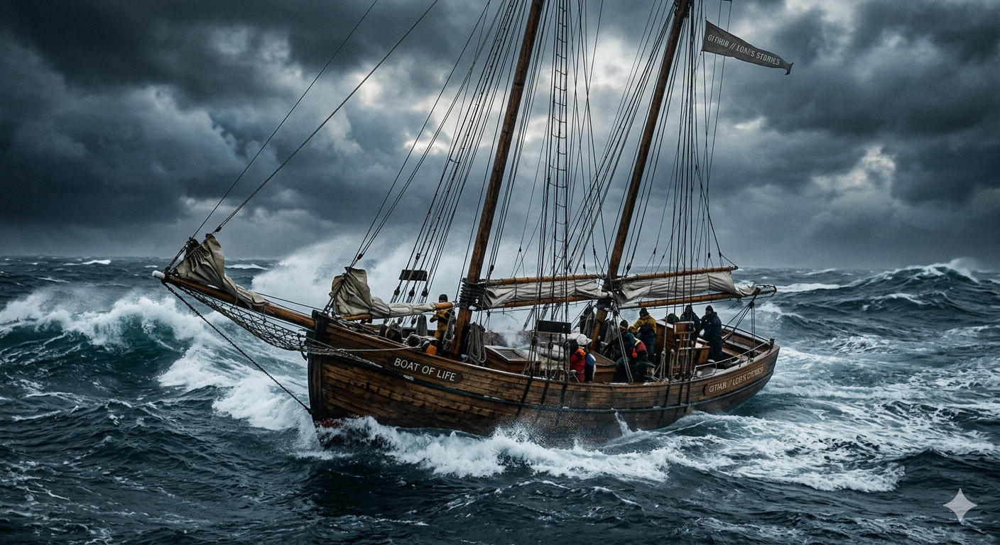

The NLP Day
Today has been strange. It has simply been the natural result of feelings that have been building up for a long time.

CHRONICLES FROM 34 DEGREES SOUTH
Today has been strange. It has simply been the natural result of feelings that have been building up for a long time.
Remembering the 84-year-old skipper who turned East at 40 South and vanished into the gray rollers.
A tragedy shared by the NSRI, a wooden wreck, and the survival of a single helmsman.
Steering by the Dassen Island light and the art of stopping a 37-foot vessel against a wooden jetty.
From the sanctuary of Langebaan Lagoon to the final mooring at Port Owen.